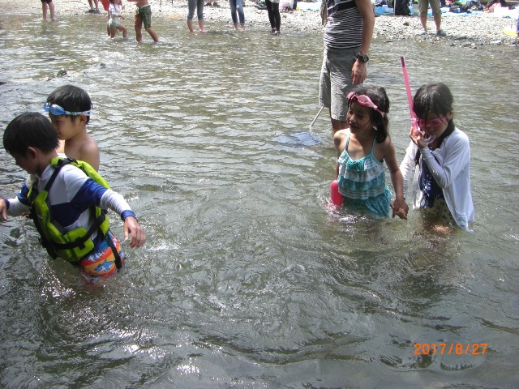

ビーバースカウト
ビーバースカウトは、小学校１年から３年までの活動です。
我々、上尾９団ビーバー隊は、遊びを中心とした活動の中で、集団行動がとれるようになるようにプログラムを実行しています。
ゲームや工作、野外での料理、サイクリングやアイススケート、ソリ遊びと内容も多彩で、平均月３回、とっても楽しい活動をしてます。
是非、一度、遊びにきてください。

2017年夏：川遊び
資料
活動報告
このホームページは、設置者（上山芳範：ボーイスカウト埼玉県連盟上尾9団）＜ueyama362@gmail.com＞の責任の下で掲載するものであり、
ボーイスカウト日本連盟が情報を提供しているものではありません。
ビーバースカウトは、小学校１年から３年までの活動です。
我々、上尾９団ビーバー隊は、遊びを中心とした活動の中で、集団行動がとれるようになるようにプログラムを実行しています。
ゲームや工作、野外での料理、サイクリングやアイススケート、ソリ遊びと内容も多彩で、平均月３回、とっても楽しい活動をしてます。
是非、一度、遊びにきてください。
2017年夏：川遊び
活動報告